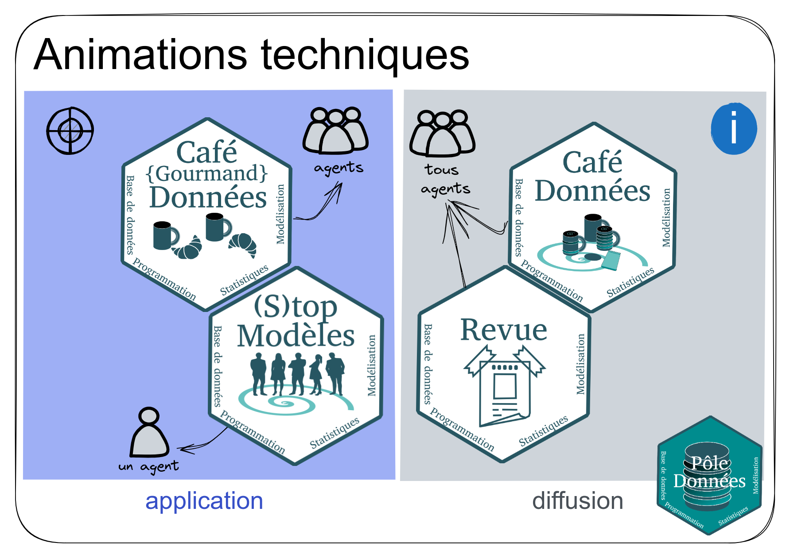
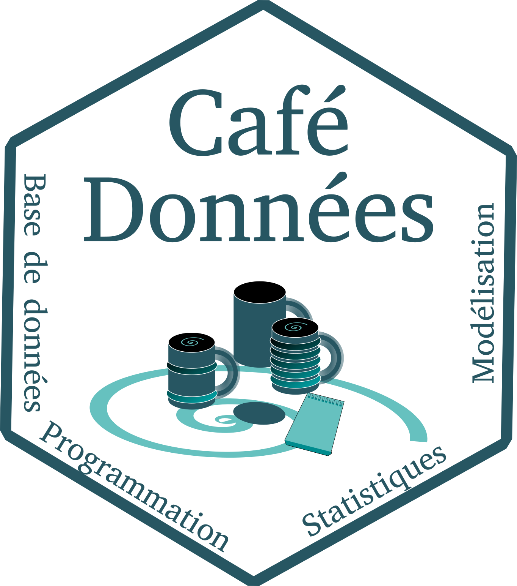
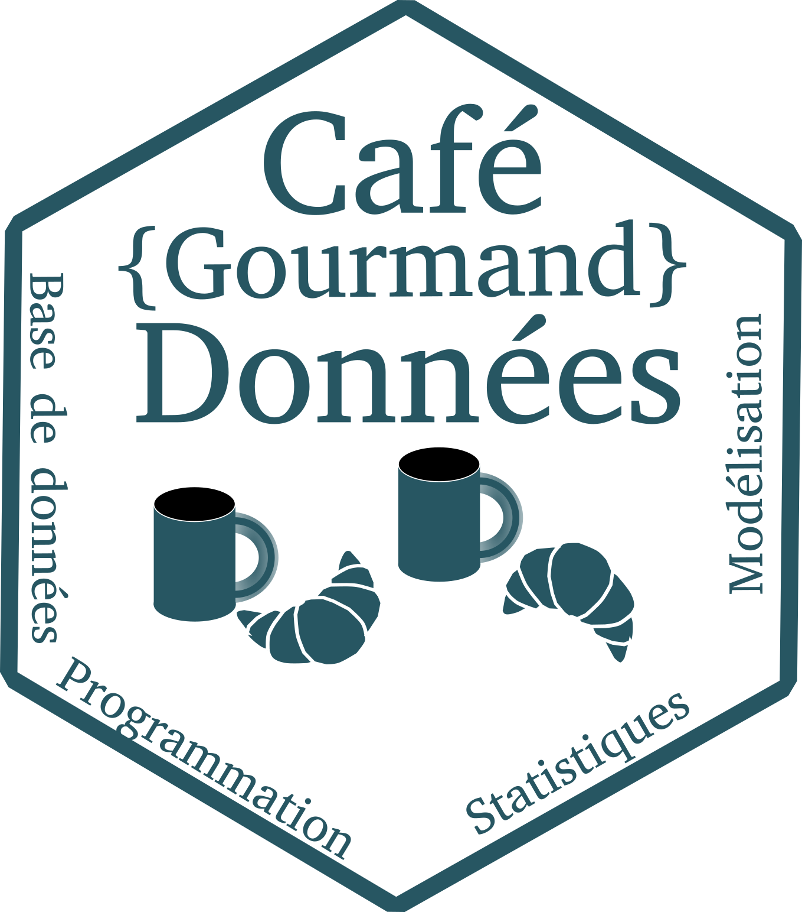
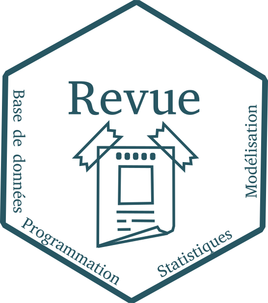
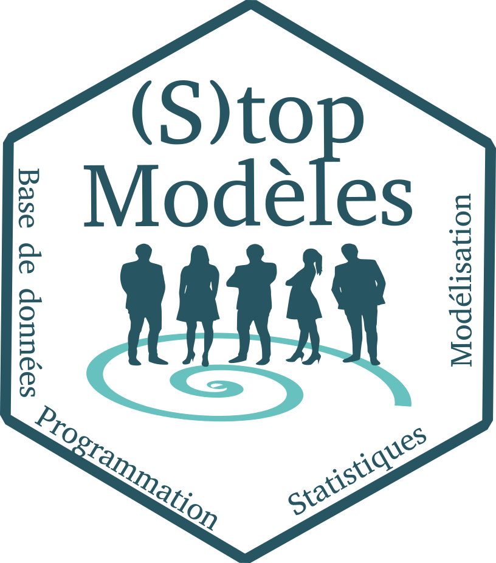

Animations techniques

Café données
“Curieux des outils métier et volontaire pour optimiser vos manières de travailler ? Participez aux Cafés Données !”

Les cafés données sont des moments conviviaux, réunissant les agents autour d’une boisson chaude accompagnée de viennoiseries, durant lesquels une thématique dans le domaine de la donnée est abordée. Suivant le thème, l’exposé d’une trentaine de minutes est plus ou moins interactif. Les sujets présentés, déterminés après concertation des membres du pôle données et analyses, doivent être génériques afin d’intéresser un spectre d’agents le plus large possible.
Café {gourmand} données
“Envie d’approfondir vos connaissances ? Assistez aux Cafés {gourmands} Données !”

Les cafés {gourmands} données sont des événements équivalents aux Cafés données mais en plus approfondis. L’idée est d’aborder une thématique de la manière la plus exhaustive possible, en présentant les packages R, les applications métier, etc. Ce sont des occasions pour transmettre des informations sur les ressources techniques disponibles en interne mais également en externe.
Revue
“Amateur d’astuces sous R ? Consultez les affiches disponibles en salle café EABX !”

L’objectif de Revue est de faire découvrir des packages R aux agents. Cette veille technique se retrouve sous forme d’une affiche exposée en salle Café EABX. Celle-ci expose les thématiques, l’objectif du package, une application d’utilisation avec les codes associés, une illustration des résultats obtenus et les sources bibliographiques pour aller plus loin. L’appropriation de cette information se fait notamment à l’aide d’un système de gamification : le concours des agents est sollicité afin de déterminer la phrase d’accroche résumant l’utilité du package qui apparaitra sur la version finale de cette affiche.
(S)top modèles
“Bloqué sur vos analyses statistiques ? Sollicitez (S)top Modèles !”

Lorsqu’un agent rencontre un problème en statistique, il a la possibilité de solliciter le groupe de travail (S)top modèles. Le renfort de 3 chercheurs au groupe d’animation du Pôle données et analyses permet d’étoffer les pistes de réflexion et de guider de manière efficace la personne en difficulté sur les aspects scientifiques.